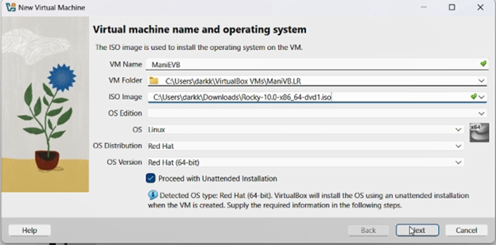
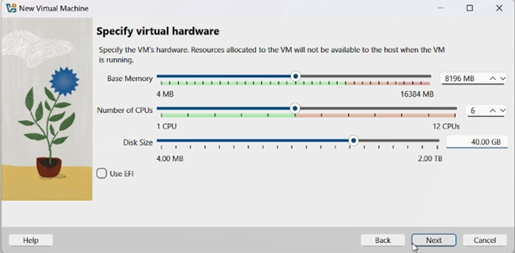
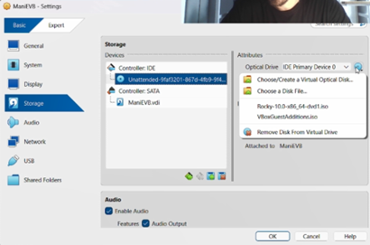
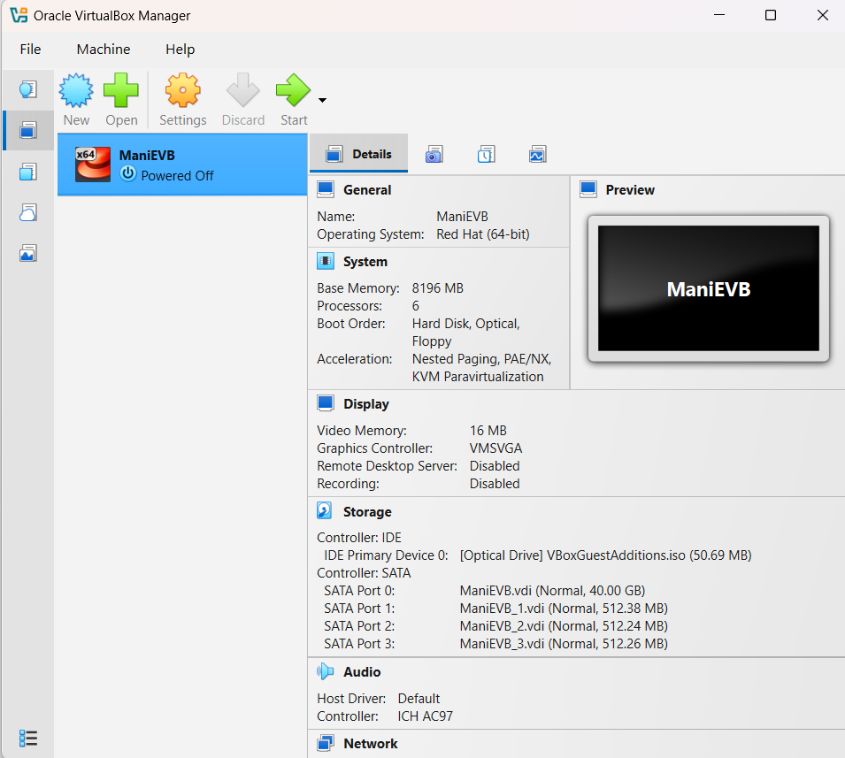
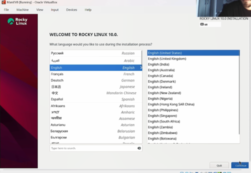
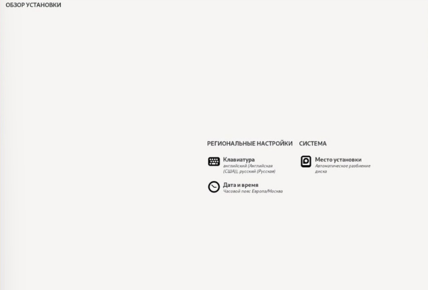
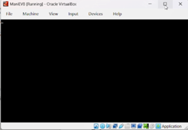
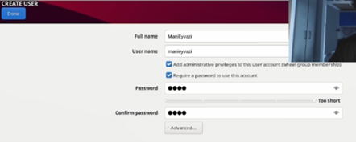
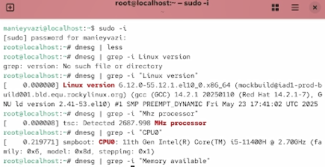
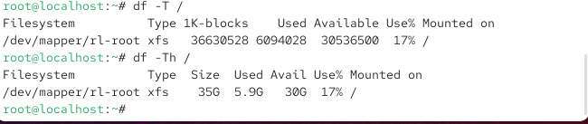

Целью данной работы является приобретение практических навыков установки операционной системы на виртуальную машину и настройки минимально необходимых для дальнейшей работы сервисов.
Создаю виртуальную машину.

Рис. 1 — Создание новой виртуальной машины
Задаю конфигурацию жёсткого диска.

Рис. 2 — Конфигурация жёсткого диска
Задаю конфигурацию жёсткого диска.

Рис. 3 — Конфигурация жёсткого диска
Добавляю новый привод оптических дисков и выбираю образ.

Рис. 4 — Конфигурация системы
Выбор языка системы.

Рис. 5 — Установка языка
Настройка параметров установки.

Рис. 6 — Параметры установки
Запуск и выполнение установки системы.

Рис. 7 — Установка
Создание пользователя системы.

Рис. 8 — Создание пользователя
Проверка работы системы.

Рис. 9 — Команда dmesg
Дополнительная проверка работы системы.

Рис. 10 — Команда dmesg
В ходе выполнения лабораторной работы были приобретены практические навыки установки операционной системы на виртуальную машину и настройки минимально необходимых для дальнейшей работы сервисов.